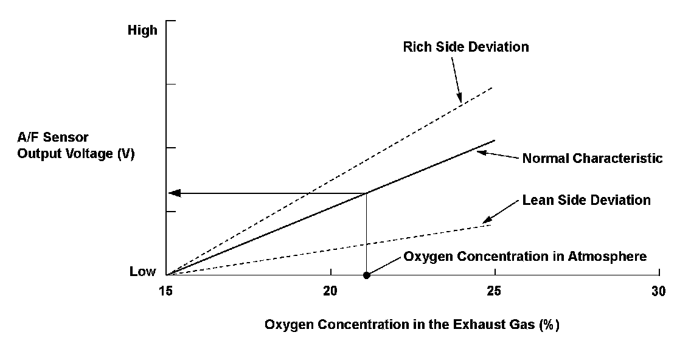
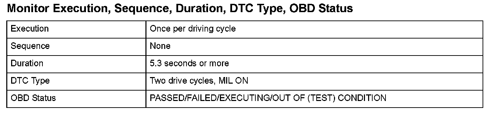
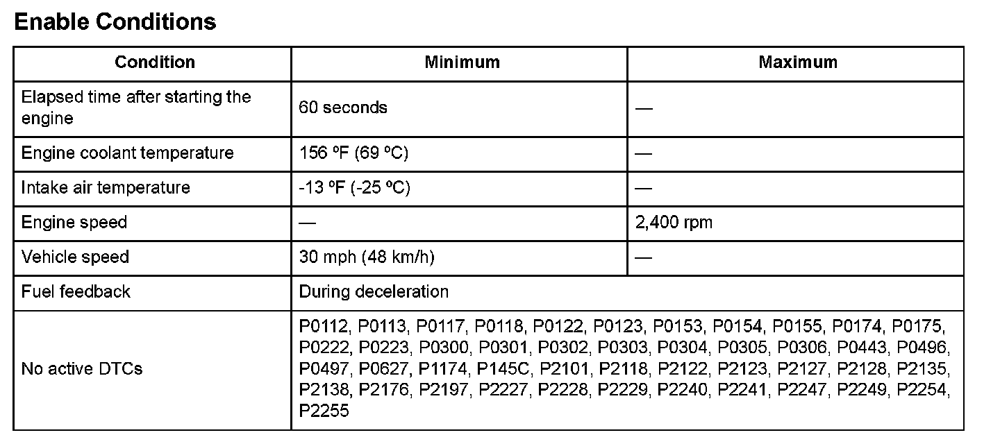
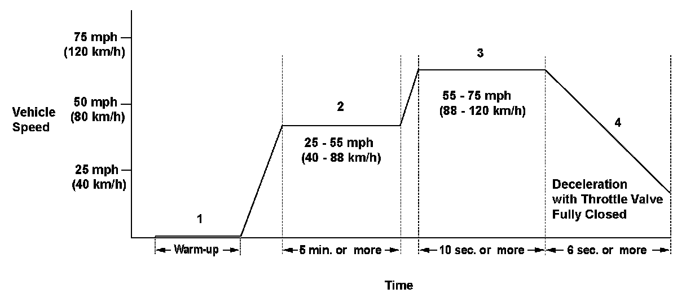

Advanced Diagnostics
DTC P2A03: Front Air/Fuel Ratio (A/F) Sensor (Bank 2, Sensor 1) Circuit Range/Performance Problem
General Description
The front air/fuel ratio (A/F) sensor (bank 2, sensor 1) has a linear signal output in relation to the oxygen concentration. The powertrain control module (PCM) computes the air/fuel ratio from the front A/F sensor output voltage and uses the fuel feedback control to improve exhaust emissions. The PCM monitors the front A/F sensor output voltage during deceleration with the throttle fully closed, and if the output voltage deviates greatly from normal oxygen concentration levels, it detects a malfunction and stores a DTC.
* Output to the scan tool exhibits a relationship between the front A/F sensor output and oxygen concentration, which is opposite to the characteristic shown in the graph. That is, a deviation toward the rich side increases the output voltage and
one toward the lean side decreases the output voltage as the stoichiometric ratio is 0.

Monitor Execution, Sequence, Duration, DTC Type, OBD Status

Enable Conditions
Malfunction Threshold
The front A/F sensor (bank 2, sensor 1) output voltage is 2.55 V or less, or 4.50 V or more.

Driving Pattern
1. Start the engine. Hold the engine speed at 3,000 rpm without load (in Park or neutral) until the radiator fan comes on.
2. Drive the vehicle at a speed between 25 - 55 mph (40 - 88 km/h) for at least 5 minutes.
3. Then, drive immediately at a steady speed between 55 - 75 mph (88 - 120 km/h) for at least 10 seconds.
4. Decelerate with the throttle valve fully closed for at least 6 seconds.
- If the EVAP monitor runs instead of the HO2S monitor, turn the engine off, then restart it, and the HO2S monitor will restart.
- Drive the vehicle in this manner only if the traffic regulations and ambient conditions allow.
Diagnosis Details
Conditions for illuminating the MIL
When a malfunction is detected during the first drive cycle, a Temporary DTC is stored in the PCM memory. If the malfunction recurs during the next (second) drive cycle, the MIL comes on and the DTC and the freeze frame data are stored.
Conditions for clearing the MIL
The MIL will be cleared if the malfunction does not recur during three consecutive trips in which the diagnostic runs.
The MIL, the DTC, the Temporary DTC, and the freeze frame data can be cleared by using the scan tool Clear command or by disconnecting the battery.